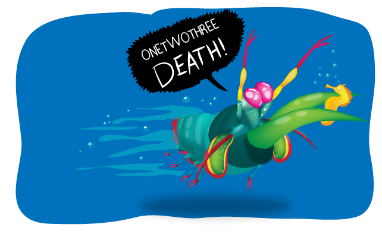

Fatos sobre o Stomatopoda
Informações científicas:
Odontodactylus scyllarus Reino: Animalia, Filo: Arthropoda, Subfilo: Crustacea, Classe: Malacostraca, Subclasse: Hoplocarida, Ordem: Stomatopoda, conhecido como Stomatopoda (ou estomatópode), chamados popularmente de tamarutacas ou de lacraias-do-mar no Brasil, é uma ordem de crustáceos marinhos da subclasse Hoplocarida, que agrupa cerca de 400 espécies, caracterizadas principalmente pela morfologia da segunda pata torácica, que é modificada em apêndice subquelado, lembrando uma pata de louva-a-deus.
Visão
O bicho enxerga através de 16, sim DEZESSEIS receptores de cores, ao contrário do ser humano que exerga em apenas três.
Assassino
O bicho não pode ficar com outros no aquário, pois ele é um psicopata.